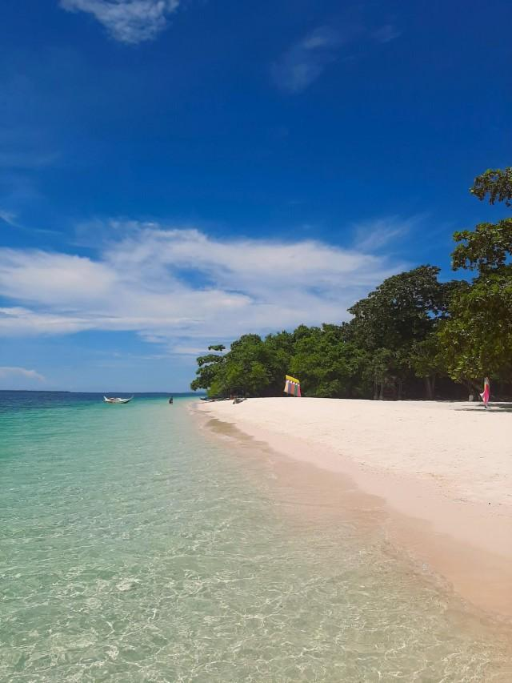

Zamboanga City has a Unique History, Fascianting Facts, and Amazing, Unique, and Beautiful Landmarks
Zamboanga's History


The evolution of the name “Zamboanga” provides an interesting insight into its historical background. The early Malay settlers called the region “Jambangan”, which means Land of the Flowers. These Malays who built their settlements by the river banks were the subanons, that is the “People of the River”. Their chief, Saragan, lived with his family atop the legendary Mount Pulumbato that today lords over Pasonanca and Climaco Freedom Park (formerly Abong-Abong Park) then later on, the Samals and the Badjaos who came on their frail vintas also settled here, building their frail huts along the shorelines and confused “Jambangan” with “Samboangan” which comes from the word “Sabuan”, the wooden pole used to help push their vintas in shallow waters or to tie them for anchorage purposes replique montre replica orologi replika klockor The Spanish colonizers found difficulty in pronouncing “Samboangan” and instead called the place “Zamboanga”. The city has rich and colorful history. It was the center of barter trading among Chinese, Malays and the native Tausugs, Samals, Subanons, and the Badjaos as early as the 13th and 14th centuries. It was in 1569 when the Spaniards made their presence felt with a small Catholic Mission established briefly at La Caldera, now known as Recodo. Much later on June 23, 1635, the cornerstone of what is now known as Fort Pilar was laid by Father Melchor de Vera, a Jesuit Priest-Engineer and the Spanish authorities. This date marked the change of the name of the place from Samboangan to Zamboanga. It is the city’s founding date. In 1899, immediately after the Spanish-American War in the Philippines, the United States of America established full authority in Zamboanga. A special form of government was established in Mindanao and Sulu. Zamboanga was made the capital. The first form of which was the Moro province and during the 12 years of its existence, the American Military Government in the Philippines converted Zamboanga into a city in the Commission Form, the first province of Mindanao to become a city. However, the government of the Moro Province was abolished to give way to a new form of government, the Department of Mindanao and Sulu. This form of government entrusted to the Filipino residents of Zamboanga practically all positions in government. The commonwealth of the Philippines on 1936 declared Zambaonga as a Charter City. Progress and development in Zamboanga continued and in 1983, the Minister Interior Jose Roño proclaimed Zamboanga City as a highly urbanized city
Brief Information
Zamboanga City, alternatively referred to as the Cuidad de Zamboanga is the only Asian City that can speak Latin Speaking City. According to the 2020 census, it hosts a population of 977,234 inhabitants, ranking it fifth in terms of population nationwide and third in land area size. It also holds the position of the second most populous city in Mindanao, trailing behind Davao City. Serving as the primary commercial and industrial center in the Zamboanga Peninsula Region, it holds considerable importance in the regional economy.
Tourist Spots in Zamboanga
FORT PILAR
Perched proudly on Zamboanga City's shores, Fort Pilar stands as a stoic guardian of history. Its weathered ramparts echo with the whispers of valor and resilience, beckoning visitors to wander through its storied corridors. Amidst the bustling cityscape, it remains an enduring symbol of the Philippines' rich cultural heritage.

SANTA CRUZ ISLAND
Santa Cruz Island is a small inhabited island in Zamboanga City in the southern region of the Philippines that is famous for its pink coralline sand.[2] The island, located 4 kilometres (2.49 mi) south of downtown at the Santa Cruz Bank in the Basilan Strait, boasts one of the pink sand beaches in the Philippines. The color of the sand comes from the pulverized red organ pipe coral from eons of surf erosion mixed with the white sand.
ABUNG-ABUNG
Nestled within the embrace of Zamboanga City's verdant landscapes, Tagbilat Falls stands as a shimmering testament to nature's grandeur. Its cascading waters dance gracefully down rocky cliffs, painting an exquisite tapestry of sight and sound. With each ripple and spray, it beckons adventurers to immerse themselves in its refreshing embrace, inviting them to uncover the hidden wonders of the Philippine wilderness.

PASONANCA PARK
Pasonanca Park in Zamboanga City is a verdant oasis where nature's beauty flourishes and tranquility reigns. Amidst lush greenery and winding paths, visitors find refuge from the bustling city life, immersing themselves in peaceful picnics and leisurely strolls beneath the tropical sun. It's a haven where the soul finds solace and the spirit dances to the rhythm of nature's song.

PASEO DEL MAR
Paseo del Mar in Zamboanga City is a picturesque tapestry where the whispers of the sea dance with the vibrant hues of sunset. Here, the gentle breeze weaves tales of enchantment, while the promenade's lively pulse invites you to explore its hidden treasures and bask in the magic of coastal living.

BENE Y ANDA YA AQUI NA MGA BONITO LUGAR DEL CIUDAD DEL ZAMBOANGA